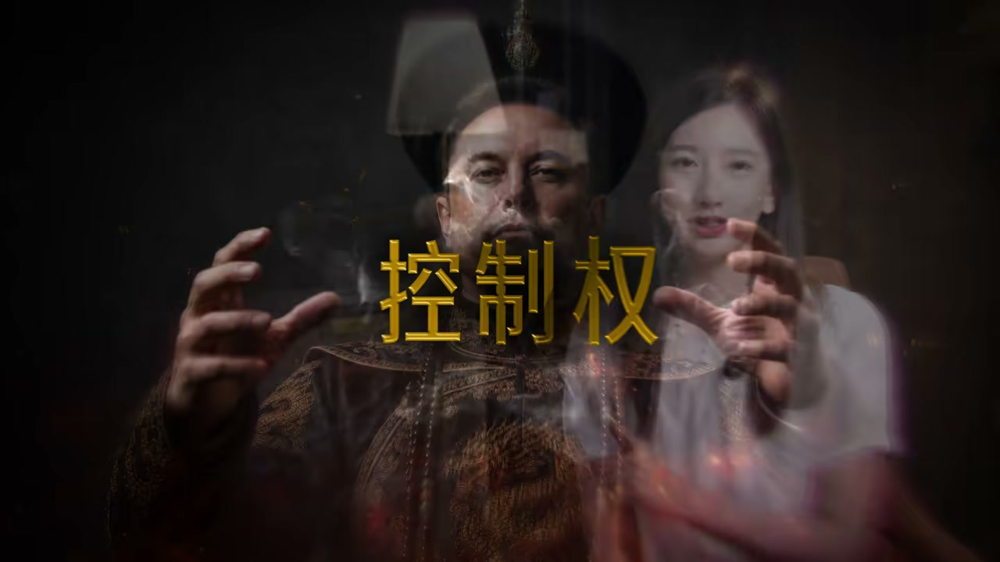
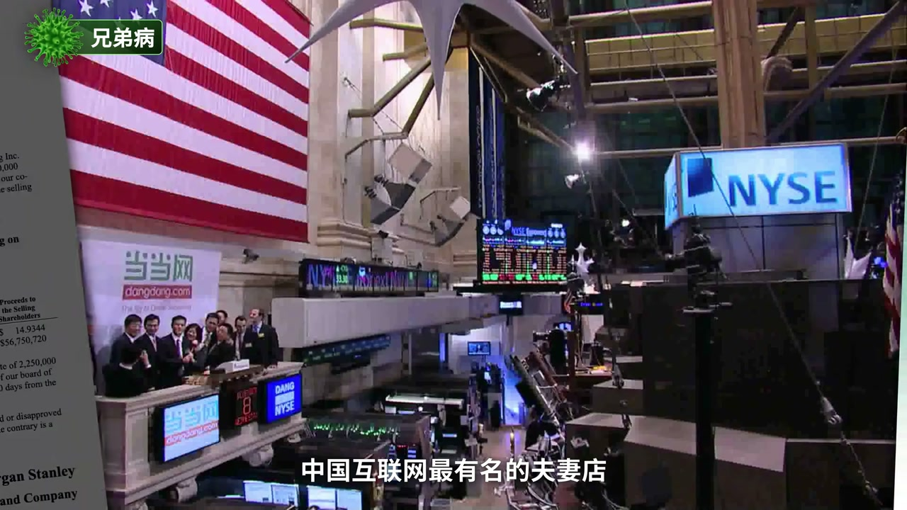
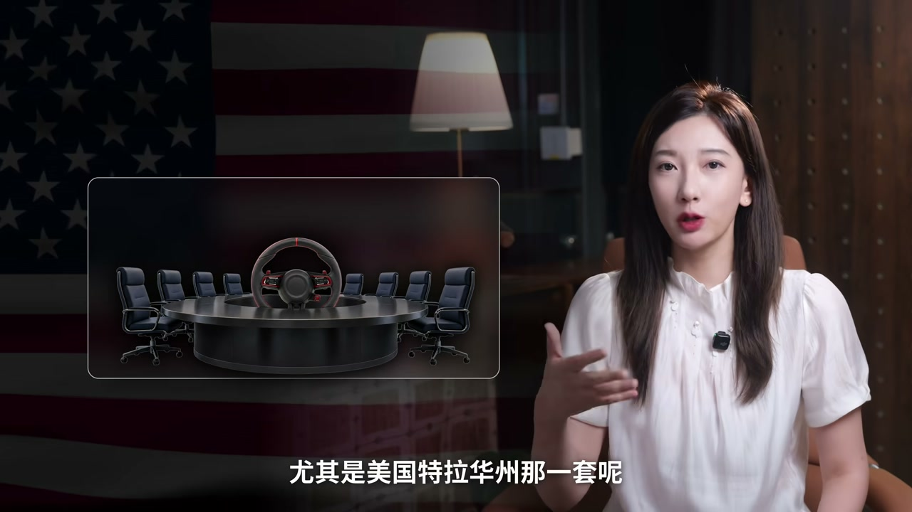
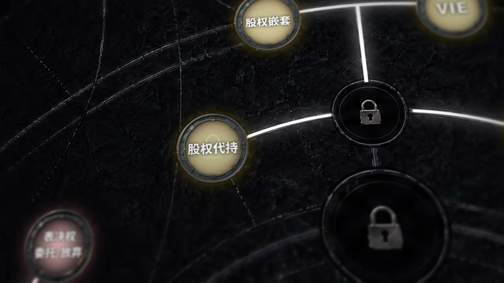

内容要点
「法商笔记」用开车比喻拆控制权：出钱买车是所有权（分红与卖车分钱），决定踩油门刹车的是控制权。视频串起乔布斯被扫地出门、PayPal/OpenAI 政变与扎克伯格式稳握方向盘，系统讲清同股同权情怀病、平分股权兄弟病、三分之一/过半/三分之二阈值，以及 AB 股、一致行动、董事会座位、套娃与 VIE——最后落到「先有车技盖章，名义控制权才焊得住」。
ASR 校正：「扭呼噜马/伊朗」→马斯克；「纽红路马」→Elon；「CVSEX/CVSX」→SpaceX；「兴浪」→新浪；阈值数字按口播约数理解（约 33.4%/50%/66.7%）。
知识结构
所有权≠控制权；情怀与 50/50 是常见自杀结构。
阈值、AB 股、一致行动、委托/放弃表决权。
抢座位/开会权；基金会套娃与 VIE 抽利润。
焊死假车会加速翻车；乔布斯们靠能力杀回；下期预告门口野蛮人。
控制权技能树可以点满，但最高境界是确认自己真会开车——愿意在必要时把方向盘交给下一个会开的人。
00:00-06:00方向盘隐喻与股权阈值
开场对比：马斯克蜜月被踢出 PayPal、乔布斯 1985、奥特曼 2023，对照扎克伯格/佩奇布林/回归后的 SpaceX 稳握。情怀病：同股同权下创始人以为「灵魂」可免疫投票；兄弟病：真功夫式平分导致谁也压不住谁。海底捞则打破平均才有拍板人。
记住约数：过约 1/3 有重大事项否决意味；过半日常说了算；约 2/3 接近绝对改装权。投资人进场常要董事席与否决——方向盘上会多好几只手。


06:00-12:00AB 股、并票与董事会
SpaceX 招股口径示例：A 股一股一票、B 股一股十票，经济权益约四成可撬投票权八成+，并影响董事席与罢免门槛。京东/小米/Snap（A 股零票）与港股 2018、科创板谨慎开闸同股不同权。一致行动、表决权委托/放弃：不转股先改票。
股东大会一年一两次，董事会才是美式公司驾驶舱；OpenAI 六人董事会四票开除创始人说明座位要命。伪派董事指定权、法定人数绑定某人到场等，是抢门票与开会权的防守。


12:00-21:27水下玩家、翻车与杀回
瓦伦堡式基金会套娃：账面收益极低却撬动巨头投票。VIE/新浪模式：牌照业务与上市主体拆分，协议抽利润并合并报表。马斯克业绩股「又是又不是」的阳谋，对照 WeWork/Theranos：方向盘焊死救不了不会开或假车。
乔布斯、奥特曼、马斯克被踹后因车技/团队拥护杀回。顺序：先让市场给能力盖章，再焊名义控制权。预告下期「门口的野蛮人」并购攻防。
完整转录（781段）
以下文本由 Whisper 自动转录，可能存在识别误差；正文已按语境校正专有名词。
26年前
马斯克和其子每次次坐上了度蜜月的航班
然而刚下飞机他就发现
自己已经被PayPal董事会一脚踢出公司了
乔布斯曾在1985年和自己请来的CEO撕破脸
被苹果扫地出门
山姆奥特曼在2013年的董事会政变中
被OpenAI原地开除
然而还有一批人
他们的股份可以被稀释
CEO的位置可以被拿走
但公司仍然稳稳握在自己的手中
比如Meta的扎克伯格
谷歌的佩奇和布林
再比如26年后王者归来
在SpaceX独揽大权的纽忽路马
这其中最关键的三个字就是
控制权
为什么有人拼命创业却被扫地出门
为什么有人手里没股份却能一票否决
他们到底是怎么做到的
这玩意儿你能学吗
能
来 今天咱们一边吃瓜
一边来学点真本事
就由小李带你把控制权这颗技能鼠
一次叠满
咱看看控制权到底该怎么控
经常开公司的朋友都知道
一家公司其实就像一台车
你掏钱把车买下来
这叫所有权
它给你的是分红增值
是哪天车卖了你能分一笔钱
可决定这辆车往哪开
踩油门还是踩刹车的
是另一样东西
控制权
出钱的人未必开车
开车的人未必出最多钱
听明白这一层
已经可以点个收藏下课了
想听点刺激的咱们接着往下
很多公司创始人都是产品天才
业务狂人
医疗技术两眼放光
可以到分权这件事上就开始栽根头了
最常见的是两种病
第一种叫情怀病
1980年苹果上市
用的是最传统的同股同权
乔布斯把他的全部精力都砸在了
怎么做出改变世界的电脑这件事上
手里只留了大概15%的股权
他天真的以为
创始人这三个字就是免死金牌
我是公司的灵魂
大家当然得听我的
1983年
他去挖百事可乐的总裁斯卡利
说出了商业史上最著名的一句聊拨
你是想一辈子卖糖水
还是跟我一起改变世界
斯卡利热血上头的就来了
然而短短两年后
这俩人就闹翻脸了
乔布斯这才反应过来
在实打实的投票权面前
情怀一文不值
因为票数不够
董事会站到了斯卡利那边
那个被他亲口忽悠来改变世界的人
把他合法地请出了苹果
卖糖水的留下了
改变世界的走了
第二种病更隐蔽
叫兄弟病
最常见的表现形式就是
平分股权
比如餐员品牌真功夫大家都吃过吧
当年两个合伙人蔡拉彪和潘玉海
股权几乎对半开
后来两个人闹翻了
抢公章打官司
硬真身把一个本来要上市的行业笼筒给拖死了
还有一个你更熟悉
更魔幻的就是当当网
李国庆遇于中国互联网最有名的夫妻店
股权差不多对半分
2020年李国庆带着几个人直接杀进公司
抢走了47枚公章
转头就发声明说
以后当当的章我说了算
那么时间他接受采访
公章就别在腰上
走哪带哪
但结局也非常令人唏嘘
当当报警了
声明作废了
章也重新刻了
你看
平分股权听起来非常公平讲义气
可在商业里
这就是典型的自杀式结构
因为谁也压不住谁
到了关键时刻没人能拍板
那咱们反观一下海底捞
章勇 舒平 施永宏 李海燕
本来是两对夫妻
平分股权一起创业
那后来公司要做大了
章勇就极其强势的用原始出资价
把施永宏的那一部分股份拿了过来
听着有点不近人情
可正是打破了绝对平均
海底捞才有了一个能一锤定音的老大
作为好的合伙
我得先把丑话说清楚
谁主导谁辅助
谁拍板谁监督
谁出力谁吃肉
这两个股份才算坐稳了呢
你不用去啃公司法
记住三个数就够了
33.3 51和69.7
过了第一个线
你就有了一票否决权
相当于不管车往哪开
只要你不点头
别人就别想把车拆的重组
过了第二个线
日常的大小事基本你说了算
过了第三个
就属于绝对的大股东了
基本拿到了对这辆车的绝对改装权
这听起来是不是特别简单
可这套按比例说话的规则
其实只在公司刚起步的时候管用
等你的公司想做大了
就会去卖股去融资
但每融一轮
创始人的股份就会被稀释一截
更可怕的是
投资人一边掏钱一边还要伸手
什么要个董事座位
要个一票否决权什么的
那这方向盘上就会悄悄多了好几只手
那有没有办法能做到
钱让大家出
方向盘永远我握呢
哎哟
而把这一招玩到极致的
还是那个要去火星的扭呼噜嘛
视频发布的时候
SpaceX应该已经上市有好几天了
现在的股价是多少
比你预期的高了还是低了呢
请在弹幕或者评论区告诉小李
回到主题
咱们打开SpaceX的招股数
你会看到
卖给公众的A类股
一股一票
马斯克自己赚的B类股
一股是10票
按招股数的口径
他的总投票权大约是82.4%
但他实际的经济权益只有四成
是怎么做到的呢
我来简化一下教教你
假设SpaceX一共100股
马斯克手里是40股
别人60股
他持股是40%
可因为B类股一股顶10票
那他这个40股就要乘以10
变成400票
分母是400加60
算下来他的投票权
就一下冲到了八成多
SpaceX的B类股
可以单独选出董事会51%的席位
而马斯克又是拿着B类股的大头
换句话说
在SpaceX这张桌子上
公众可以买股票
机构可以进场
但董事会多数席位怎么做
关键票仍然攥在马斯克手里
于是一个人就能选掉
或者提交董事会的多数席位
哪怕下来公司大笔增发
甚至要跟特斯拉合并
能投下决定性反对票的
从头到尾也只有他一个
更狠的是
招股书还写了
要罢免马斯克的董事CEO
或者董事长职位
也需要B类股多数投票权批准
你看
这就是控制权的第一招
AB股
同股不同权
而且用的人不止马斯克
京东的刘强东
B类股一股20票
雷军在小米上市
也是靠AB股
把创始团队的票保了下来
这玩法的极限
你可能没那么熟悉
2017年美国的Snap
公开发行的A类股
一股是0票
没错
就是0票
散户们只掏钱就行了
一句话都插不上
不过这套打法
A股市场其实很长时间是不认的
港交所2018年专门改了规则
重新给同股不同权开门
当时的港股掌门人李小佳说的就很直接
4年前他们没接住阿里
严直正正看着他跑去纽约敲钟
这次他不想再错过小米
所以小米就成了港股这场改革的标志案例
到了2019年
A股也在磕霜板试着开了刀缝
第一个吃螃蟹的是做云计算的优客得
三个创始人靠5比1的特别表决圈
用大约23%的股份
赚出了大约6成的票
但这道门A股开得非常谨慎
你看优客得的章程里
碰上5类大事
特别表决圈就直接作废
老老实实的一股一票
只有日常经营的那些事
才能享受5倍的投票
你评评
法律一边给创始人开门
一边在门后留了道闸
他既怕创始人被资本一脚踹走
又怕散户被一股独大彻底架空
门开多大闸留在哪
每股港股A股各划各的线
当然了
AB股不是唯一的玩法
还有两招小米顺带串授给你
一招叫一致行动协议
说白了就是几个人约好以后投票都一个方向
持股比例合在一起算
比如宁德时代的创始人曾玉群和联合创始人李平
他们在2015年签了一份一致行动人协议
提案提名投票全保持一致
谭布鲁以曾玉群为准
所以他们俩就叫共同实际控制人
他们也一起把公司做成了全球电池一哥
另一招叫表决权委托
还有它的反面表决权放弃
委托是我把票借给你一起算
你的分子变大
放弃是股东主动签字说
我这票不投了
所以分母变小了
这两招又轻又快
不用转股
不出发一堆审批
钱不动
票先到手
AD股一致行动
委托放弃
三招说到底都在干同一件事
在股权层面把钱和话语圈强行拆开
是不是又学到了
可这些全都还在股东的这一层
而在真实的商业世界里
股东大会从来不是唯一的战场
咱们刚刚一直在说投票
可这票到底在哪用呢
答案是股东大会
竞争炒股的朋友都知道
股东大会是什么节奏呢
一年凑这么一两次
看看财报
盯紧大方向
投完票就散了
那真正天天在阴线冲锋的
是C级高管
而卡在股东和高管中间
决定要不要换CEO
在重大变工上拍板的
是董事会
这里补一个小常识
不然下面的故事可能看不懂
英美法
尤其是美国特拉华州那一套
是典型的董事会中心主义
公司的重大经营管理
原则上是归董事会
也就是说
美国公司董事会才是真正的驾驶舱
所以归国的创始人
最怕的就是在董事会那张桌子上
被自己的人嫌翻了
那中国走的是大陆法系
更偏股东会中心主义
股东会是权力机构
很多大事得他点头
当然
这两年公司法修订
也在网上抬董事会的角色
但不管哪一套
越往高处玩
高手肯定不止点着
股东大会那点票
他们抢的是更要命的东西
谁有资格坐上那桌主位
而抢主位这件事
又是纽红路马
给了大家最暴力的示范
CVSX这次上市
他干脆以受控公司的身份
挂牌纳斯达克
合法豁免了董事会多数
必须是独立等事的这类要求
别人是上市后
被一堆外部董事盯着
他是上市前
就把桌上能坐几个外人
这条规则给改了
他为什么对董事会这么戒备呢
我们看一个案例就懂了
2013年11月
OpenAI爆发了一场
震惊全球的公斗
当时的董事会
连创始人奥特曼本人算进去
一共才6个人
结果其中4个董事司下通了气
拉了个线上会
就直接把创始人兼CEO的
奥特曼给开除了
更魔幻的是
砸了100多亿的大股东微软
是在奥特曼被开除前不久
才接到的通知
而这就是董事会桌上的
杀伐果断
不用着急全体股东
也不管外面谁偷了多少钱
只要在这张桌子上凑够票
当场就能掀桌让你下课
那你看
马斯克和奥特曼什么关系
懂的都懂
他绝对不允许自己重蹈这一幕
那咱们说完了马斯克的暴力攻击
既然有攻就有防对吧
顶级玩家
其实还背着两招防守动作
第一手是抢伪派权
2017年Uber的创始人卡尼克
被大资本和董事会联合逼攻
被迫辞去了CEO
他眼看就要被彻底的清洗出局了
然后他突然甩出了
当年在治理条款里
给自己留了一张底牌
他有着新增董事席位的指定权
那就在投资人准备
把他踢走的档口
他光速塞了自己的
两个盟友经董事会
结果资本再有钱
票再多
也只能干瞪眼
第二手叫抢开会权
京东的章程里
曾经有过一个很妙的设计
只要刘强东还是董事
董事会就要凑齐法定人数开会
那原则上就必须得有他在场
这比单纯的投票权很多了
就关键时刻
只要他不到场
不点头
这种会根本开不起来
哪怕会议室里做满了反对他的人
他都能直接把店员拔了
对方连投票把他赶走的机会都摸不到
Twitter,OpenAI,Uber,京东
看到这儿你会发现
真的高手不仅要抢票
还要抢座位
抢门票
抢开会的资格
他们布的是一张密不透风的网
向所有人传递一个信号
你们休想绕开我
可这些招数都还是摆在明面上
而在商业世界更深的地方
还有一类玩家
他们根本不想让你看见自己在控制家公司
却又牢牢的掌握着他的命运
瑞典有一个姓瓦伦堡的家族
这家人极少抛头露面
全球富豪堡上几乎看不到他们的名字
可爱丽馨ABB
做新冠疫苗的阿斯利康
北游头部银行ICB
造相斗机的萨博
这些背后都站着这个家族
有机构估算
他们的商业版图大概和马斯克一个两级
这家人有一句拉丁文加训
翻译成中文是四个字
做而不嫌
以爱丽馨为例
论真金白银
瓦伦堡家族层层折算下来
大概只有2%的收益
但是他们却撬动了
爱丽馨仅1%的投票权
怎么做到的呢
咱们来看看这个套娃结构
最顶上是十几家非盈利基金会
他们控制着投资旗舰
Investor大约一半的投票权
那Investor再往下
他去当爱丽馨ABB
阿斯利康这些巨头的长期大股东
一层套一层 环环相扣
明面上看
这些超级企业的大股东
是一堆做慈善
搞科研的非盈利基金会
不仅富豪榜查不到个人名字
连居优异产税
可能都找不到口袋去收
可实际上
谁当CEO
公司网纳重组
要不要跨国并购
全由这个家族在最顶层定
这招也不是北欧专利
意大利的阿联利家族
链条几乎一模一样
而法拉利 吉普 阿尔塔罗密欧
甚至尤文图斯足球俱乐部
头上都印着阿联利的名字
但套娃呢
好歹是靠持股一层层叠上去的
那下面就更狠了
根本连股都不持了
纯靠一络合同
把控制权和利润一起拿走
这一招就是前几年
大家非常熟悉的一个词
VIE
故事得从27年的星浪说起
当时星浪想去美国上市
却卡在一条红线上
按当时的规矩
互联网信息服务这类
增值电信业务
是禁止外资进入的
可星浪的股东又有美元基金
那一边是外资不能碰到牌照
一边是必须靠外资才能上的市
于是星浪想了个绝的
把要牌照的那块业务
单独剥离出来
成立一家纯内资公司
由中国人持股
专门拿SP牌照
独立运营
不参与上市
真正去美国上市的
是另外一家外商独资公司
然后呢
这家外资公司
就跟那家内资公司
签了技术服务独家咨询
股权支押
投标权委托
独家购买权的一系列协议
它的作用是啥呢
它让外资公司一股都不吃油
却能把内资公司的利润
以服务费的名义
几乎全部抽走
还能决定它的人事和经营
连财务报表
都能合并进上市公司
你看
VIE这三个字
本来只是个会计术语
叫可变利益实体
可兴浪这条路一走通
就立刻成了母版
后面阿里 腾讯 百度 京东
就所有去京外上市的中概股
用的都是这一招
因此也被叫做兴浪模式
这套结构呢
在灰色地带待了20多年
直到2023年
正经会办新规
第一次打VIE明确管了起来
那不是静止
是你要把这套协议怎么搭的
有没有风险
老老实实交代清楚
其实背后的考量呢
也无非就是数据安全和外资边界
当然了
除了套娃和VIE
想把时空人藏起来
还有不少五花八门的玩法
比如家族信托
当股权装进离岸信托
法治上的股东就变成了受托人
人就隐身在结构后面了
轮廓的伍雅军就是经典案例
股权早早装进信托
后面连离婚都没动摇公司的控制权
再比如股权代持
找人替你持股
签一份抽屉协议
不过这招在IPO审核里是必须清理的红线
属于风险比较高的玩法
还有日本财阀玩了几十年的交叉持股
企业之间互相持股 互相站台
有外人想看清谁说了算
得先解一道环形方程
有兴趣的朋友可以暂停截图看下这些玩法
或者拿关键词去搜一搜
篇幅原因就不展开一个个讲了
好 说到这你可能觉得
跟这些藏在水下的玩家比
那些名牌玩家是不是太朴素了
其实并非
咱们再回头看看你有呼噜码
它的招股书里
其实一夜藏着一首汪超级的操作
CVSEX的董事会
批给了马斯克10亿的计效股
行军条件非常夸张
是要他在火星建成一个百万人口的殖民地
听起来是不是给马斯克画大饼拿胡萝卜呢
可关键在于这些股票还没有归他
但是他现在就能拿去投票
还能拿去抵押贷款
可以说这就是纯纯的阳谋
这股票是我的又不是我的
但最终肯定是我的
瓦伦堡是坐而不写
马斯克是坐而大写
但不管写还是不写
说穿了他们都还是一种约定好的控制权
即使是水面下的
也有我们说的叫抽屉写意的文件
是白纸黑字写好的
但是你知道吗
还有一种无形的控制权
它不靠头衔
不靠票数
也不写进任何文件
靠的只有一样东西
你的车记
一个方向盘焊在你的手里
从来就不等于你会开车
纸面的控制权
只决定有没有资格坐上驾驶座
但坐上去之后
车能开多久
全看车迹
听起来就很抽象
咱们来看两个翻车的教材
注意
它俩甚至连翻车的姿势还不一样
第一个是WayWork的诺伊曼
他的问题是
车是真车
人不会开
他讲了一个惊天好故事
说我们租的不是公位
是未来的工作方式
就靠这个
忽悠出了470亿美金的估值
他用超级投票权架空董事会
作为汉子死死的
但是他疯狂烧钱
疯狂的自我交易
直到招股书被扒开
全城人才发现
司机其实一直在乱踩油门
紧接着
WayWork估值雪崩
IPO撤回
控制权一夜清空
第二个更狠了
这张图你一定很眼熟
他是Ceranos的霍姆斯
他的问题是
连车都是纸糊的
他靠着一滴血测白病的惊天大饼
融资超过7亿
估值值充90亿
他的董事会里
坐着前国务卿
前国防部长
四星上将
但他们全是背景版
因为这家公司的票
牢牢站在他一个人手里
后来的事情你已经知道了
这辆车本身就是假的
所以方向盘焊的越死
车也翻的越快
结局就是
公司清零了
人也进监狱了
你看
一个是不会开
一个是开假车
结局都是一样的
直面权力救不了他们
那反过来呢
有些人
只要车迹在身
就算被踹下车
也能杀回来
还记得开头被扫地出门的那三个人吗
乔布斯
奥特曼
马斯克
现在
咱们把他们的下半场
一个一个补完
现在乔布斯
他被流放到12年里
派出了玩具总动员
此刻出Nex的系统
把自己就练成了车神
1997年
苹果离破产只剩90天
他们砸了4个亿买下了Nex的
跪求车神出山
王者过来后
乔布斯学习董事会
成了苹果事实上的掌舵人
注意啊
这时候他只有连控股权都没有
但已经没人能夺走他的方向盘
这不是古里
谷歌红色警报师拉回佩奇和布林
起码可暂时各式请回舒尔兹
干的都是同一件事
我们再看奥特曼
那场公路的上半场
6人董事会4票把他开除
他走得很狼狈
可下半场的结局却是
OpenEye700多号员工
把身家押上
要跟奥特曼一起走
在人民的拥护之下
他短短几天就杀回了驾驶座
被甩出车的反而是董事会
具体细节
感兴趣的可以去看小李这期视频
不过得说句公道话
乔布斯的车技
时间已经盖了章
奥特曼最终能开向何方
还得接受时间的检验
而把制造体打得最完整的
还是你有呼噜吗
26年前
杜密叶的他被踹下了车
是因为座位没有焊死
车机还没有人认可
26年后
猎鹰星链星际舰特斯拉
一次次替他的能力盖了章
而靠着这些
他才换来
SpaceX的82%的绝对投票权
CEO CTO董事长一键挑
董事想换谁换谁
看明白了吗
顺序很重要
不是先抢方向盘再学开车
而是车技需要先被市场盖的章
指名上的控制权才焊得住
而这种搭法
可能就是给马斯克那种人准备的
因为你还要看到
有一些掌舵人会选择在
公司非常成功的时候
选择激流勇退
因为他们可能已经掂量清楚了
自己的车技
可能已经不能带领公司
驶向更远的地方了
那真正高明的一手
反而是愿意松开方向盘
交给下一个真会开车的人
你看
咱们点了一整期的技能数
怎么把方向盘抢到手
汗死藏好
但车技这一个
没人能替你点亮
或许控制权的最高境界
从来不在于你能把它钻得多紧
而在于你能不能确定
自己就是那个真正会开车的人
大家好 我是小李
这里是法商笔记的第二集
控制权到底怎么控
不知道你有没有发现
今天我们讲的
基本都还是自己人的战争
创始人 投资人 董事会 管理层
大家好歹都已经坐在同一张排桌上
可商业世界里还有一种敌人更吓人
他从门外来
不跟你打架
他就跟着你
跟着你
跟着你
跟着你
跟着你
跟着你
跟着你
跟着你
跟着你
跟着你
跟着你
跟着你
跟着你
跟着你
跟着你
跟着你
跟着你
不跟你打招呼
他先悄悄买一点
再买一点
再买一点
当你发现的时候
他可能已经可以决定你的生死
没错
这就是门口的野蛮人
LVMH偷袭爱马仕
逼得整个家族抱团锁骨
才把世界首富挡在门外
宝能扫活万科
汪师一句
不欢迎你
挡不住人家一路举牌成为第一大股东
马斯克买推特
从读完到邀约 毁约
对簿公堂
最后他抱着水槽
走进了推特总部
诶
你是不是已经开始有点期待了
下期法杖笔记
我们来点下一颗技能树
并购
到底怎么并
如果你喜欢这个系列
请给脚里点赞
评论收藏
我们下期再见
拜拜